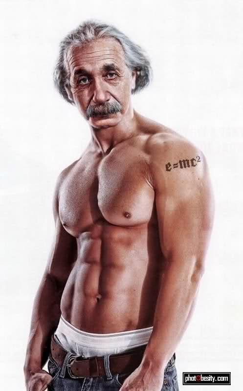

Hier geht es zu den Supplementen!.
Nahrung bildet die Grundlage für unsere Existenz.Klicke hier um mehr über effektive Nahrungsmittel zu erfahren , die mit einer gleichzeitigen Nachhaltigkeit einhergehen. Ohne Nahrungsmittel würde unser Gesellschaftssystem schnell zusammen brechen. Deswegen benötigen wir effiziente und massentaugliche Umsetzungen, die im Falle eines Notfalles im kollektivem Bewusstsein unserer Gesellschaft gespeichert ist und direkt ausgeführt werden kann.
Working smart and hard is the key!
